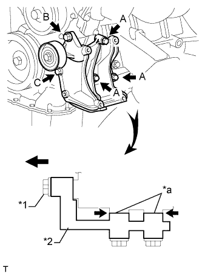

ДАТЧИК ПОЛОЖЕНИЯ КОЛЕНЧАТОГО ВАЛА > УСТАНОВКА |
| 1. УСТАНОВИТЕ ДАТЧИК ПОЛОЖЕНИЯ КОЛЕНЧАТОГО ВАЛА |
 |
Нанесите тонкий слой моторного масла на уплотнительное кольцо датчика положения коленчатого вала.
| *1 | Кольцевое уплотнение |
Установите датчик положения распредвала и закрепите его болтом.
Подсоедините разъем датчика положения коленчатого вала и закрепите зажим жгута проводов.
| 2. УСТАНОВИТЕ КРОНШТЕЙН КОМПРЕССОРА № 1 |
|  |
Временно установите кронштейн опоры и закрепите его 5 болтами.
| *1 | Болт B |
| *2 | Кронштейн опоры |
| *a | Отсутствие зазора |
Убедитесь, что между блоком цилиндров и кронштейном нет зазора, как показано на рисунке. Затем вверните болт, обозначенный B.
Затяните болты, обозначенные A и C.
| 3. ПОДСОЕДИНИТЕ КОМПРЕССОР СИСТЕМЫ КОНДИЦИОНИРОВАНИЯ В СБОРЕ |
 |
Временно установите компрессор системы кондиционирования и закрепите его 4 болтами.
При установке компрессора системы кондиционирования затягивайте болты в последовательности, показанной на рисунке.
Подсоедините разъем.
Закрепите трубопровод низкого давления болтом.
| 4. УСТАНОВИТЕ ЛОПАСТНОЙ НАСОС В СБОРЕ |
Закрепите лопастной насос 2 болтами.
Подсоедините 2 разъема.
Установите нагнетательную трубку с помощью болта.
| 5. УСТАНОВИТЕ КОЖУХ ВЕНТИЛЯТОРА |
Установите кожух вентилятора (Нажмите здесь).